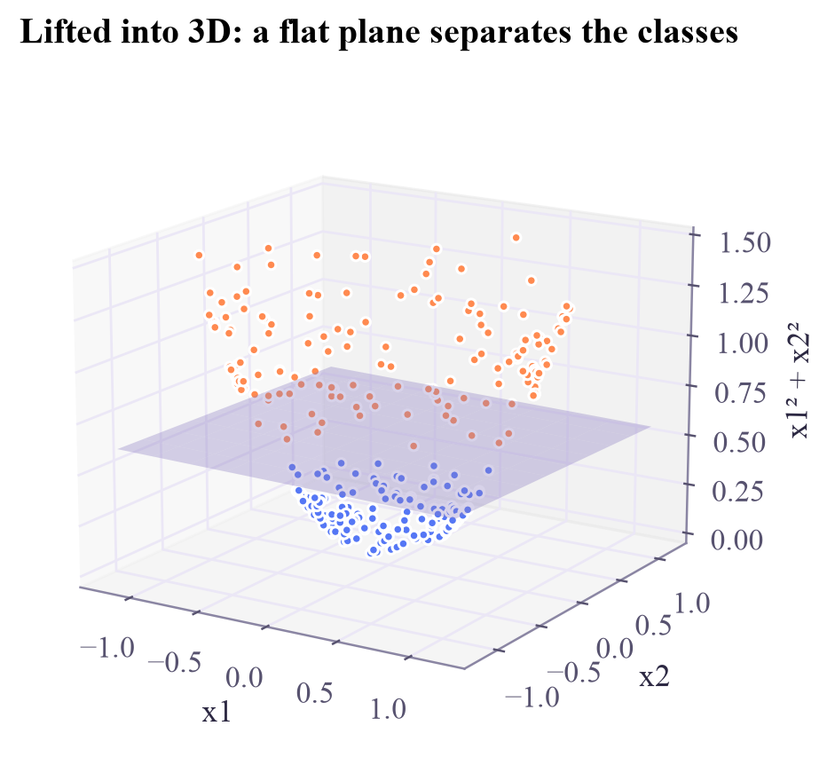
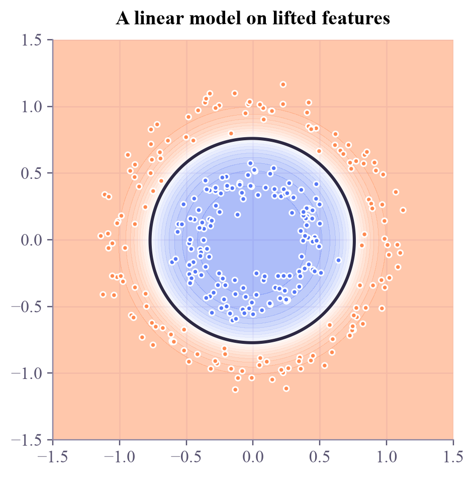

straight line in 2D, accuracy: 0.503
Machine Learning
 about 11 min
about 11 min ml-w4d1.ipynb
ml-w4d1.ipynb
Feature maps: lift your data
When no straight line works, add a dimension. In the bigger space a flat plane does the job.
In this lesson you will
- Explain what a feature map is
- See why a linear model in feature space gives a curved boundary
- Notice how quickly the number of features explodes
Warm-up
1 minA problem from Flatland

This week is about one idea that quantum machine learning builds on: similarity. It starts with a trick. Imagine you live in a flat, 2D world. A ring of orange points surrounds a cluster of blue ones, and your only tool is a straight ruler. Hopeless! But if you could pull the blue points upwards into a third dimension, a flat sheet of paper could slide in between. That trick is called a feature map, and it's the doorway to kernels and quantum kernels.
Big idea
3 minChange the space, not the model
A feature map turns each input into a longer list of features. For the ring:
The new third feature is the squared distance from the center: small for the inner blue points, large for the outer ring. In this 3D feature space a flat plane separates the classes perfectly.
Now the key idea. The model is still linear in the features, but looked at back in the original 2D picture, the plane is a circle. A linear model on lifted features draws a curved boundary.
You can lift with any features you like: squares, products such as , sines... PolynomialFeatures generates all products up to some degree. The catch is cost. With 10 inputs, degree 2 makes 66 features, degree 5 makes 3,003, degree 10 makes 184,756. On Wednesday the kernel trick will get around this.
Play
4 minLift it yourself
Press Lift, then slide the plane up and down until it separates the colors. Drag the 3D view to look from the side. The small map shows what the plane means back in 2D.
Try this
Before lifting, try to separate the points with the plane: impossible, they're all at height 0. After lifting, find the height that gets 100%. On the small map, notice the circle's radius is the square root of the plane's height.
Code
3 minLifting in Python
The notebook for this lessonEvery code cell below, with what it printed, is in
ml-w4d1.ipynb. To change the code and run it yourself, open the notebook in Google Colab (free, in your browser) or download it for your own Jupyter.import numpy as np
import matplotlib.pyplot as plt
from sklearn.datasets import make_circles
from sklearn.linear_model import LogisticRegression
X, y = make_circles(n_samples=300, noise=0.08, factor=0.45, random_state=0)
flat = LogisticRegression().fit(X, y)
print("straight line in 2D, accuracy:", round(flat.score(X, y), 3))What it printed in the notebook
def lift(X):
return np.c_[X, (X ** 2).sum(axis=1)] # add a third column: the squared distance from the center
Z = lift(X)
lifted = LogisticRegression().fit(Z, y)
print("shape before:", X.shape, " after:", Z.shape)
print("flat plane in 3D, accuracy:", round(lifted.score(Z, y), 3))What it printed in the notebook
shape before: (300, 2) after: (300, 3) flat plane in 3D, accuracy: 1.0
colors = np.where(y == 0, "#ff8a50", "#5577f5")
w1, w2, w3 = lifted.coef_[0]
b = lifted.intercept_[0]
fig = plt.figure(figsize=(6, 4.6))
ax = fig.add_subplot(projection="3d")
ax.scatter(Z[:, 0], Z[:, 1], Z[:, 2], c=colors, s=12, depthshade=False)
gx, gy = np.meshgrid(np.linspace(-1.2, 1.2, 10), np.linspace(-1.2, 1.2, 10))
gz = -(w1 * gx + w2 * gy + b) / w3 # the plane w·z + b = 0, solved for the third coordinate
ax.plot_surface(gx, gy, gz, color="#b9a7ff", alpha=0.35)
ax.set_xlabel("x1")
ax.set_ylabel("x2")
ax.set_zlabel("x1² + x2²")
ax.view_init(elev=16, azim=-58)
ax.set_title("Lifted into 3D: a flat plane separates the classes")
plt.show()What it printed in the notebook

from matplotlib.colors import LinearSegmentedColormap
apricot_blue = LinearSegmentedColormap.from_list("apricot_blue", ["#ff8a50", "#ffffff", "#5577f5"])
xx, yy = np.meshgrid(np.linspace(-1.5, 1.5, 250), np.linspace(-1.5, 1.5, 250))
p = lifted.predict_proba(lift(np.c_[xx.ravel(), yy.ravel()]))[:, 1].reshape(xx.shape)
fig, ax = plt.subplots(figsize=(4.6, 4.2), layout="constrained")
ax.contourf(xx, yy, p, levels=20, cmap=apricot_blue, alpha=0.5)
ax.contour(xx, yy, p, levels=[0.5], colors="#2c2842", linewidths=2)
ax.scatter(X[:, 0], X[:, 1], c=colors, s=12)
ax.set_aspect("equal")
ax.set_title("A linear model on lifted features")
plt.show()What it printed in the notebook

from sklearn.pipeline import make_pipeline
from sklearn.preprocessing import PolynomialFeatures
print("degree-2 features:", PolynomialFeatures(2).fit(X).get_feature_names_out(["x1", "x2"]))
auto = make_pipeline(PolynomialFeatures(2), LogisticRegression()).fit(X, y)
print("accuracy:", round(auto.score(X, y), 3))
for d in [2, 5, 10]:
n = PolynomialFeatures(d).fit(np.zeros((1, 10))).n_output_features_
print(f"with 10 input features, degree {d:2d} makes {n:>7,} features")What it printed in the notebook
degree-2 features: ['1' 'x1' 'x2' 'x1^2' 'x1 x2' 'x2^2'] accuracy: 1.0 with 10 input features, degree 2 makes 66 features with 10 input features, degree 5 makes 3,003 features with 10 input features, degree 10 makes 184,756 features
Your turn
2 minYour turn: lift the XOR
In the XOR pattern, opposite corners share a class, and no straight line can separate them. Which single extra feature makes the problem linearly separable? Add it and compare the accuracies.
rng = np.random.default_rng(1)
Xx = rng.uniform(-1, 1, size=(400, 2))
yx = (Xx[:, 0] * Xx[:, 1] > 0).astype(int) # class 1 in the top-right and bottom-left corners
def lift_xor(X):
return X # TODO: add one new column
print("2D line: ", LogisticRegression().fit(Xx, yx).score(Xx, yx))
print("after lifting:", LogisticRegression().fit(lift_xor(Xx), yx).score(lift_xor(Xx), yx))Need a hint?
Class 1 sits where and have the same sign. Which simple combination of them is positive exactly there?
Show a solution
def lift_xor(X):
return np.c_[X, X[:, 0] * X[:, 1]] # the product x1*x2 is positive exactly for class 1
print("2D line: ", LogisticRegression().fit(Xx, yx).score(Xx, yx))
print("after lifting:", round(LogisticRegression(C=100).fit(lift_xor(Xx), yx).score(lift_xor(Xx), yx), 3))
print("One product feature turns a hopeless problem into an easy one: the right feature map is everything.")What it printed in the notebook
2D line: 0.6825 after lifting: 0.99 One product feature turns a hopeless problem into an easy one: the right feature map is everything.
Check yourself
1 minQuick check
Question 1 of 2
A linear classifier is trained on the features . Seen in the original 2D plane, its boundary can be…
Question 2 of 2
Why not just add every polynomial feature up to degree 20?
Wrap-up
1 minToday in one sentence
Quantum link
This is the central idea of quantum kernel methods. A quantum circuit takes a data point and prepares a state of qubits: a feature map into a space of dimension . Tomorrow's entanglement lets that map mix features in ways that are hard to compute classically.
Go deeper (optional)
ISLP section 9.3.1 ("Classification with non-linear decision boundaries") starts from exactly this idea: enlarge the feature space, then draw a straight boundary there.
Next in Machine Learning: support vector machines, which look for the widest possible street between two classes.

That's the lesson!
Tap the button to save it. Short and steady wins.
Marked by mistake? Undo